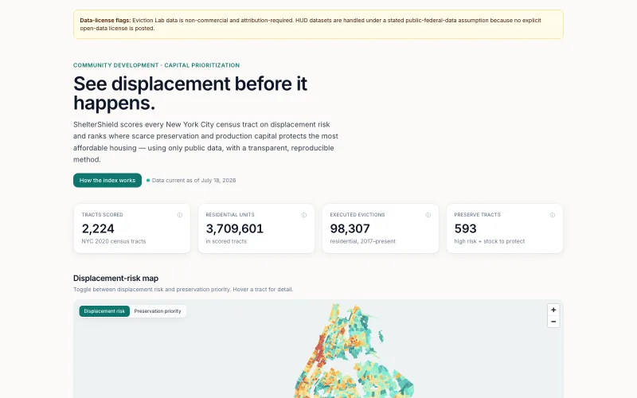
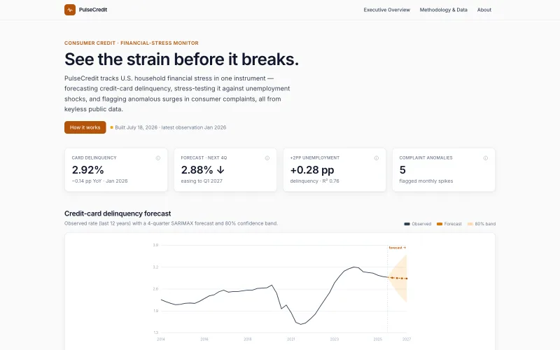
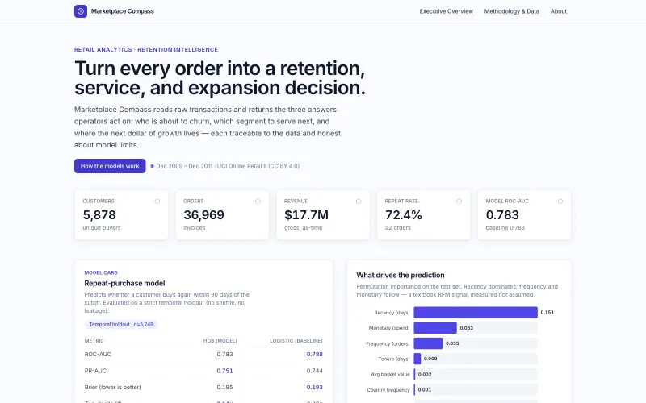
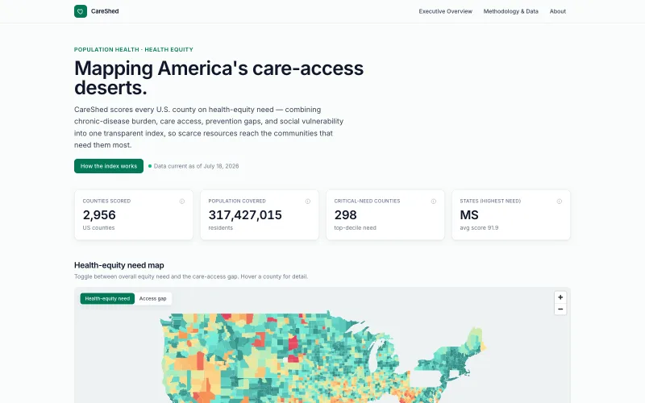
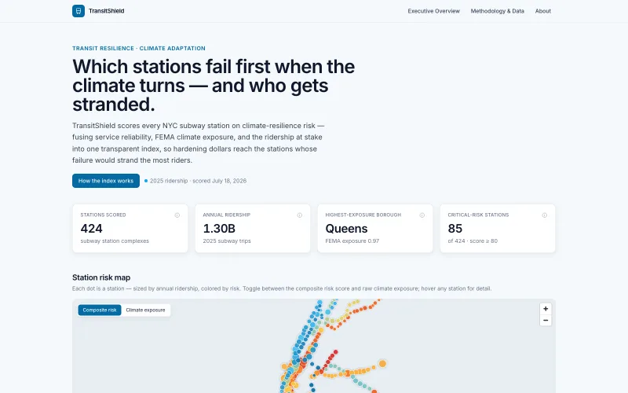
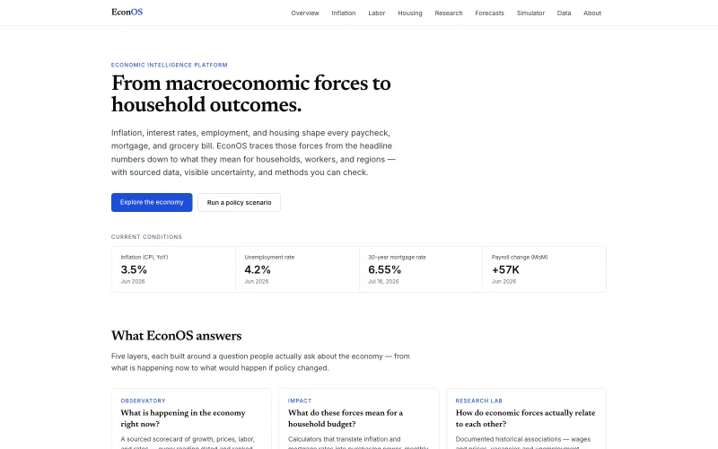
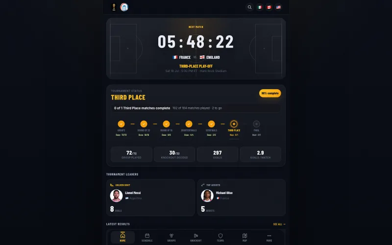
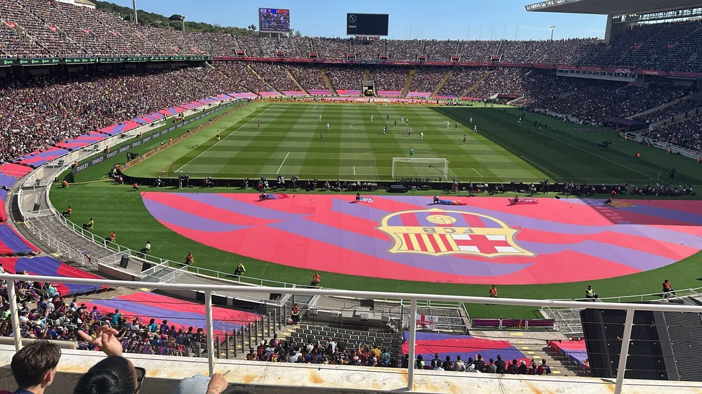
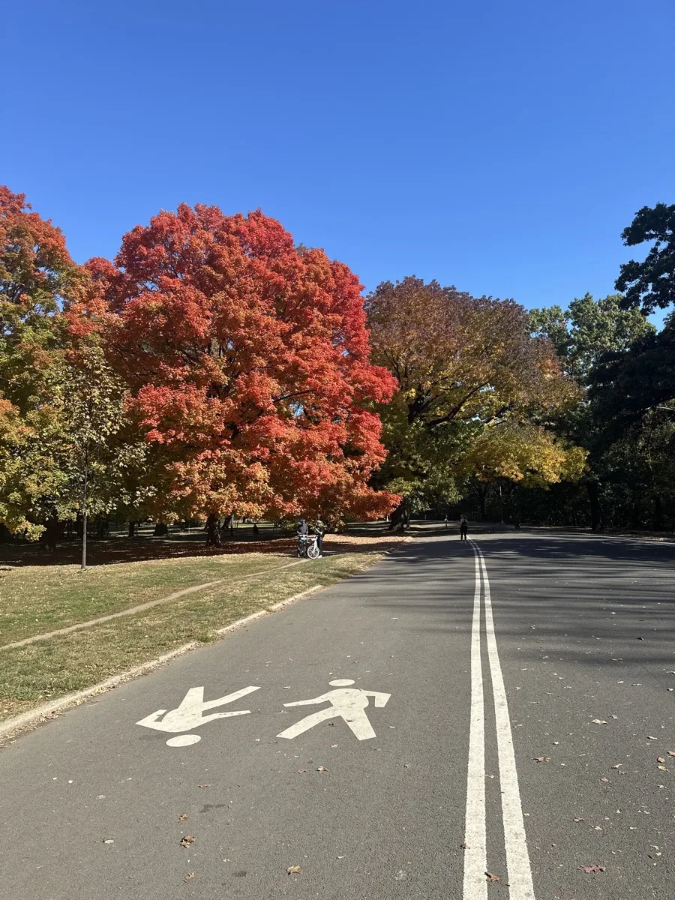

Maps & Place-Based Risk
Geospatial decision intelligence
Choropleths, ranked places, drill-down patterns, and risk maps for housing, care access, and transit resilience.
Economist · Data & Analytics · Product Builder
I'm Jean-Luc Saint-Fleur. I build production tools that translate public data into decisions across housing, healthcare, finance, transportation, and economic policy — with traceable methods and honest uncertainty.
Each skill links to evidence in the live portfolio, not a generic progress bar.

Maps & Place-Based Risk
Choropleths, ranked places, drill-down patterns, and risk maps for housing, care access, and transit resilience.

Forecasts & Scenarios
Forecast bands, scenario simulators, anomaly views, and plain-language uncertainty for financial and economic decisions.

Models & Operators
Retention modeling, calibration, segment playbooks, and decision thresholds framed for business users.

Pipelines & QA
Public datasets are transformed into validated outputs with source provenance, caveats, and schema gates where repo-backed.

Dashboards & UX
Dense but readable dashboards, clear KPI hierarchy, mobile layouts, dark mode, and export-oriented workflows.

Narrative & Strategy
Each app turns technical analysis into “what it means,” “what to do next,” and “what to trust.”
EconOS is the centerpiece. The remaining products show breadth across sports, housing, healthcare, finance, transit, retail, and community impact.
Centerpiece Project · Economics
It combines sourced economic indicators, household impact framing, research views, forecasts, and policy scenarios into a live intelligence platform.

World Cup intelligence for a live tournament.
Tracks matches, groups, knockout progress, leaders, maps, and tournament state in a mobile-first product.
See displacement before it happens.
Ranks NYC tracts where preservation and production capital can protect affordable housing.
Mapping America's care-access deserts.
Scores U.S. counties so scarce health-equity resources reach highest-need communities.
See the strain before it breaks.
Forecasts credit stress, tests unemployment shocks, and flags complaint anomalies.
Which stations fail first when the climate turns.
Ranks subway stations by climate exposure, reliability pressure, and riders at stake.
Turn every order into a decision.
Combines churn modeling, RFM segments, and CLV tiers for retention decisions.
Tableau
A curated selection from 23 published vizzes — a traffic-ticket heat map, the NYS nonprofit database, an in-depth NYC collisions analysis, and an executive profit dashboard — each embedded interactively on the Tableau page, with the full collection on Tableau Public.
A fast read on what each product proves, with a table fallback for assistive technology.
| Capability | Compet | Shelter | Care | Pulse | Transit | Market | Econ |
|---|---|---|---|---|---|---|---|
| Geospatial analysis | Yes | Yes | Yes | No | Yes | No | No |
| Composite scoring | No | Yes | Yes | No | Yes | No | No |
| Forecasting or scenario | Yes | No | No | Yes | Yes | Yes | Yes |
| Validated ML model | No | No | No | No | No | Yes | No |
| Anomaly detection | No | No | No | Yes | Yes | No | No |
| Segmentation | No | Yes | Yes | No | No | Yes | No |
| Prioritization | No | Yes | No | No | Yes | No | No |
| Sourced methods | Yes | Yes | Yes | Yes | Yes | Yes | Yes |
Integrity guardrails
Every number traces to a public source, every license flag is honored, and every limit stays visible.
The same person who builds the dashboards: a former college soccer captain from Brooklyn who still plans trips around football matches.


About
I build technology inspired by the communities I serve. With nine years administering federal grant, contract, and program portfolios - currently steering LISC New York's statewide HUD Section 4 portfolio and a $6M+ NYCHA PACT task-order portfolio, and leading LISC NY's AI and data strategy - I find problems in affordable housing, workforce development, and government-funded programs, then design, build, and ship products that solve them.
Senior community-development professional · AI & software engineering · New York, NY. This portfolio spans ingestion, modeling, geospatial and statistical analysis, machine learning, and production web delivery, with a consistent emphasis on reproducibility and uncertainty.